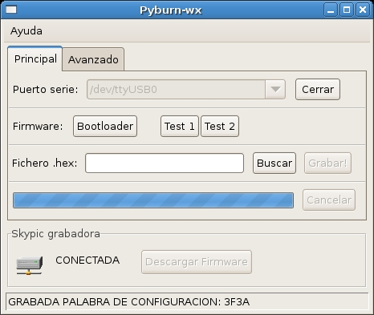
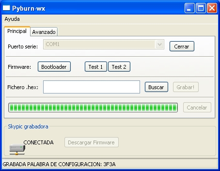

Si en el microcontrolador PIC tienes grabado el Bootloader , podrás descargar tus programas desde el PC sin problemas, usando por ejemplo el Pydownloader. Pero… ¿Cómo puedes grabar el Bootloader?. Necesitas un circuito programador. Si ya tienes una tarjeta skypic, la podrás usar como programadora. Con sólo apretar un botón podrás grabar el Bootloader.
Una gran ventaja del Pyburn es que es Libre y Multiplataforma, y además está programado en Python, por lo que es muy fácil de modificar. Aquí podéis ver un pantallazo ejecutándose en Linux:

Y aquí en Windows XP:

Las librerías gráficas que he utilizado son las wxPython, que tienen la ventaja de que el aspecto de la aplicación es igual al de los programas nativos de cada sistema Operativo.
El código fuente es el mismo (no hay una versión para Linux y otra para windows), lo que hace muy fácil su mantenimiento.